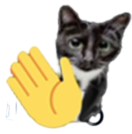
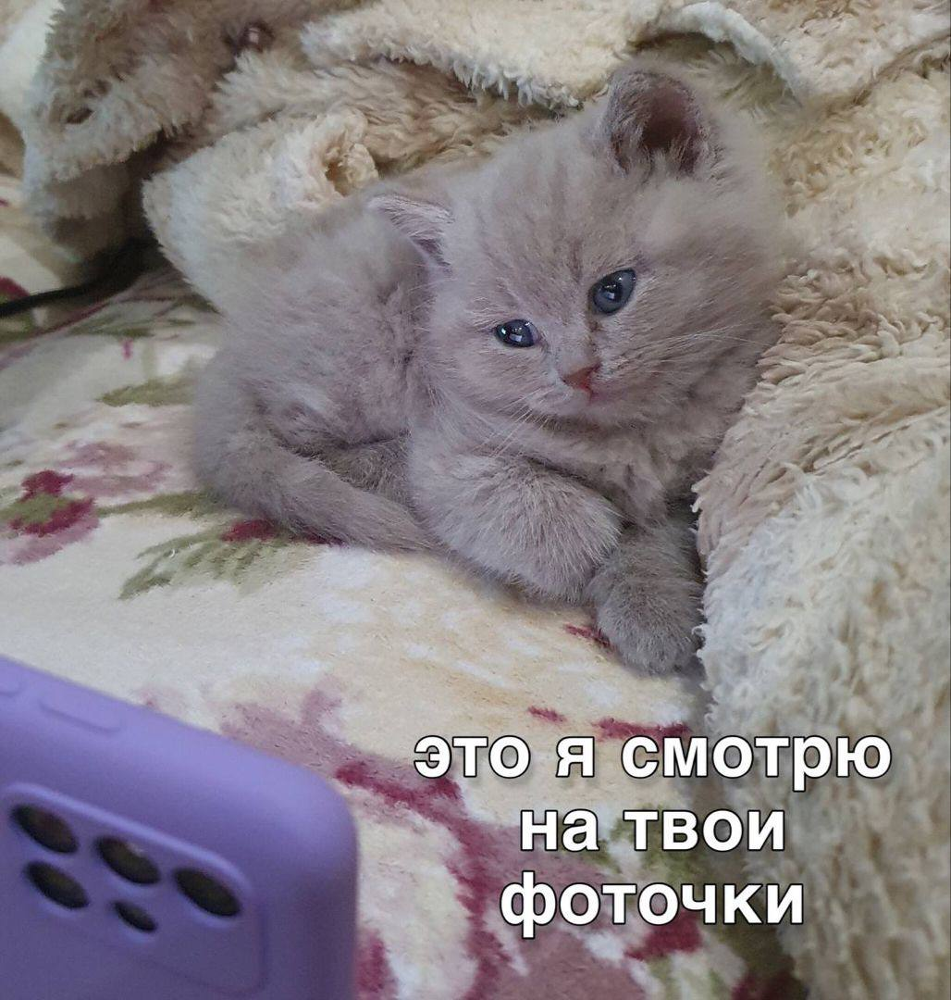
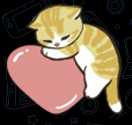
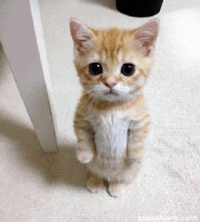
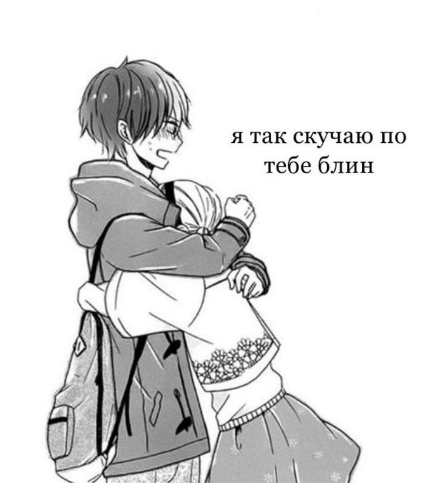
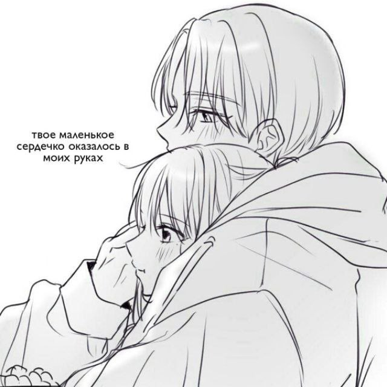

<3
Ксюша...
Знаешь что..?
в общеем
во-первых..:
это ты
и эта тоже
во-вторыых..
Я..
очень..
люблю тебя!!
спасибо тебе за то, что ты есть у меня!
а ищоо...

я так постоянно делаю
не забывай...
что твоё личико...
самое прекрасное в мире:)
ээх...

и даа...

и я изо всех сил буду стараться его содержать в идеальных условиях:))
тыж мая самая милая девочка
я хочу просто постоянно говорить тебе всякие милые и добрые слова...
блиинаа... ну...
насколько же...
твои глазки прекрасны...
ну реальноовао
я просто не могу с них...
всё воскресенье рассматривал...
ыаыаыааы, я ваще абнимаца хачу ваще-та...
обнять и никогда больше не отпускать...
и ещё хочу гладить тебя по твоим волосикам...
ну ужас, почему ещё так долго ждать встречи:(
я уже наших встреч жду, как люди обычно всякие праздники...
я жду нашей встречи больше чем др.
ты у меня самая миленькая!
милашечкка моя:))
знала бы ты как я тебя люблю...
просто невероятно сильно
ох, как же я тебя в субботу обниму...
<3
в общем всё:
скоро заберу тебя
будем вместе жить и всё у нас будет прекрасно!
лю тя <3
интересненько, как тебе ваще..?:)
мяу!